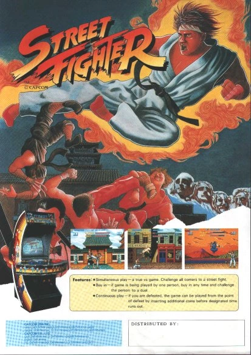

Street Fighter, diseñado por Takashi Nishiyama y Hiroshi Matsumoto, debutó para Arcade en 1987.[2] El jugador controla a Ryu, un artista marcial oriundo de Japón, para competir en un torneo mundial de artes marciales que incluye a diez oponentes de cinco países. Un segundo jugador puede controlar a Ken Masters, el rival amistoso de Ryu originario de Estados Unidos. El jugador puede realizar tres tipos de golpes y tres tipos de patadas, cada uno de diferente velocidad y fuerza, así como tres ataques especiales: Hadōken, Shōryūken, y Tatsumaki Senpūkyaku, que requieren llevar a cabo combinaciones especiales de palanca y botones.[3]

Street Fighter fue adaptado a muchos tipos de computadoras personales, incluyendo MS-DOS. En 1987, fue adaptado a la consola TurboGrafx-CD con el nombre Fighting Street.[4] Street Fighter posteriorment fue incluido en el juego compilatorio Capcom Classics Collection: Remixed para la consola portátil PlayStation Portable[5] y en su secuela Capcom Classics Collection Vol. 2, para las consolas PlayStation 2 y Xbox.[6] También aparece en el juego compilatorio Street Fighter 30th Anniversary Collection para la octava generación de consolas y Windows.[7]